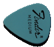

Carnegie Hall
Atlanta Montreux Jazz Festival
The Hollywood Jazz Festival
Bumbershoot
Northwest Folklife Festival
The Ballard Jazz Festival
Jazz in the Valley
venues in Europe, Central America
and the Middle East

back to biography
|
Tula’s
The Triple Door
The Owl and Thistle
EMP’s Liquid Lounge
The Sunset Tavern
Mona’s
|